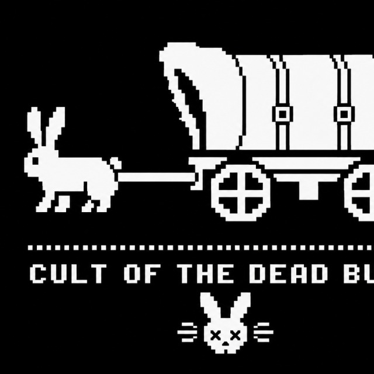

01
PHREAKING
Dial tones, switching lore, and the weird music of old networks.
FREQUENCY: ANALOG[ 001 / WELCOME TO THE WARREN ]
A little mischief on the old information superhighway. Curious minds, odd signals, and a very long rabbit hole.
We like the web when it feels handmade. When a screen of text can still hide a secret door. When curiosity matters more than polish.
This is a small tribute to the noisy, inventive spirit of the 90s underground: zines, terminal prompts, phone tones, and people who took things apart to understand them.
[ NO GRAND CLAIMS. JUST A RABBIT HOLE. ]
Dial tones, switching lore, and the weird music of old networks.
FREQUENCY: ANALOGText files, hacker zines, and ideas passed from one terminal to another.
FORMAT: PLAIN TEXTObscure links, happy accidents, and questions worth staying up for.
STATUS: OPENThe original sketch gave us the trail: one determined rabbit, a wagon full of mystery, and a tiny skull-eared calling card.
SOURCE IMAGE / PROVIDED BY THE GROUP
A tiny corner of the site that answers back. Start with help.
system> Welcome to the warren. Type help and press Enter.
COMMANDS: HELP / WHOAMI / LORE / RABBIT / DATE / CLEAR